굴려라 용사여!
휘두를 때마다 주사위를 굴린다 · 픽셀아트 방치형 RPG
옛날 테이블탑 RPG 규칙으로 싸우는 방치형 게임이에요. 라운드마다 영웅과 몬스터가 6면체 주사위를 한 움큼씩 던지고, 합이 높은 쪽이 때립니다. 방어구가 피해를 막고, 6이 나오면 방어구를 뚫고 들어가요. 영웅을 어떻게 키울지는 당신이 정합니다.
Roll On, Hero!
Every swing is a roll of the dice · a pixel-art idle RPG
An idle RPG built on old-school tabletop rules. Every round, the hero and the monster each throw a handful of six-sided dice, and the higher total hits. Armor soaks part of the blow, and every 6 you roll bites through anyway. You decide how your hero grows.
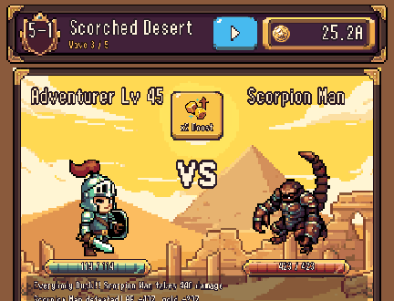
이런 게임이에요
- 눈으로 보는 주사위 전투주사위 하나하나, 합계, 행운의 6까지 화면에서 구릅니다.
- 10개 챕터, 몬스터 50종초록 들판에서 용의 봉우리까지. 챕터마다 배경과 보스가 달라요.
- 알아서 터지는 스킬 5종받아라 이 악마야!, 아이고 가엾어라, 다들 엎드려!! 외.
- 장비 19종무기·갑옷·방패를 사고 골드로 강화하세요.
- 환생막히면 처음부터 다시, 영혼석으로 영구 특성을 배워 더 빨리.
- 꺼 둬도 계속 모험처음엔 2시간, 깊이 갈수록 늘어 최대 12시간까지 보상.
스크린샷
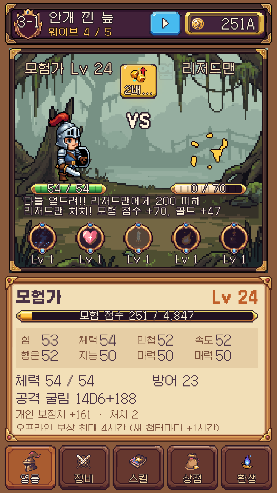
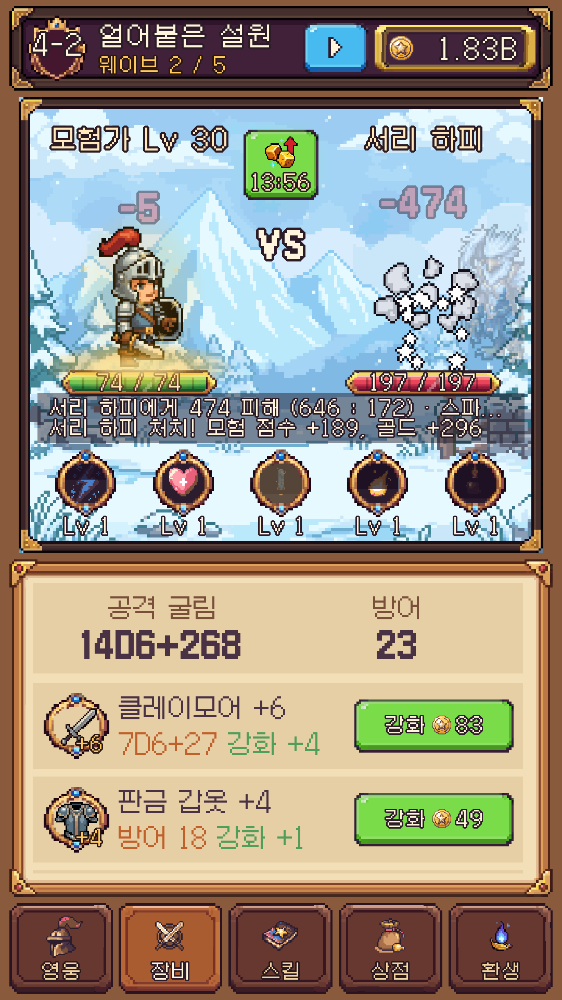
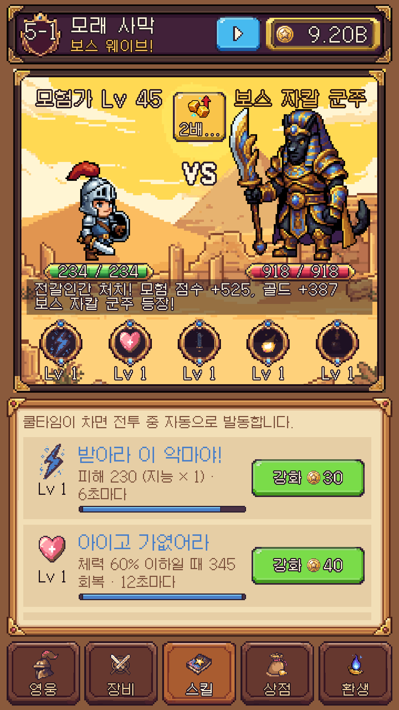
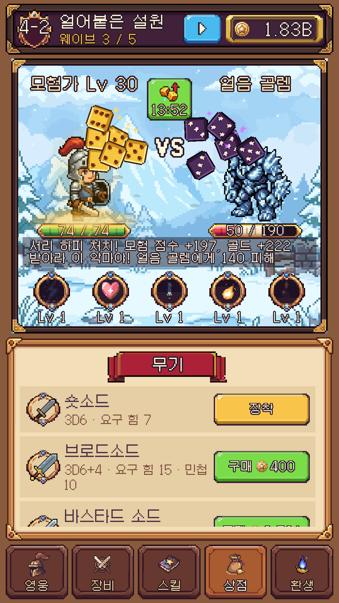
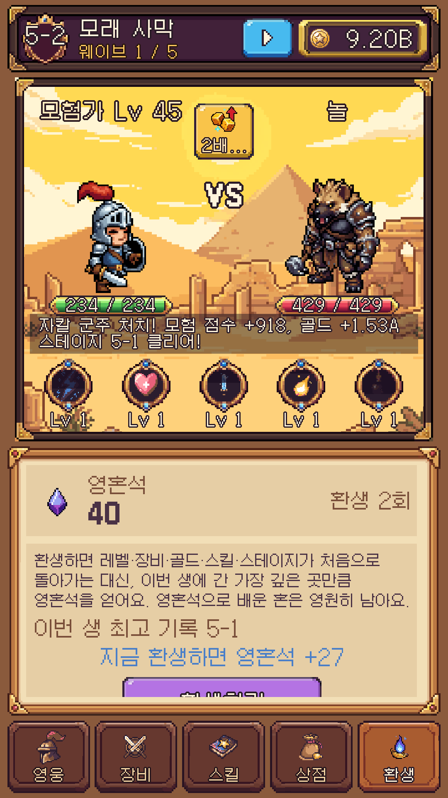
What's inside
- Dice combat you can seeEvery die, every total, every lucky 6 tumbles across the screen.
- 10 chapters, 50 monstersFrom a green meadow to the dragon's peak, each with its own boss.
- 5 auto-cast spellsTake That, You Fiend!, Poor Baby, Everybody Duck!! and more.
- 19 pieces of gearBuy weapons, armor and shields, then enhance them with gold.
- RebirthStart over for soul stones and permanent souls. Every new life goes faster.
- Keeps fighting while you're away2 hours at first, growing to 12 hours as you go deeper.
Screenshots
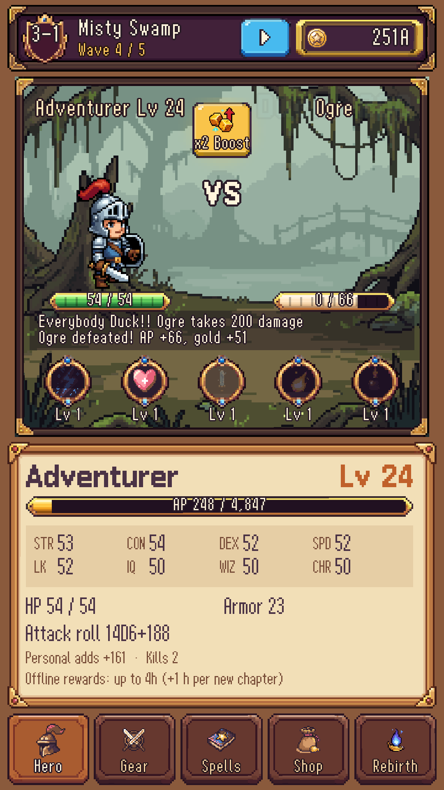
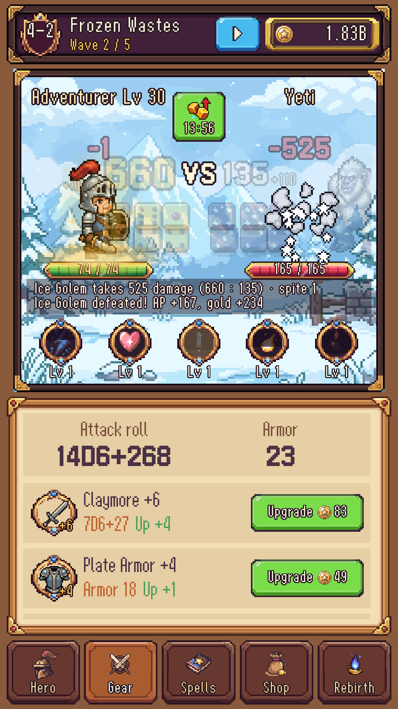
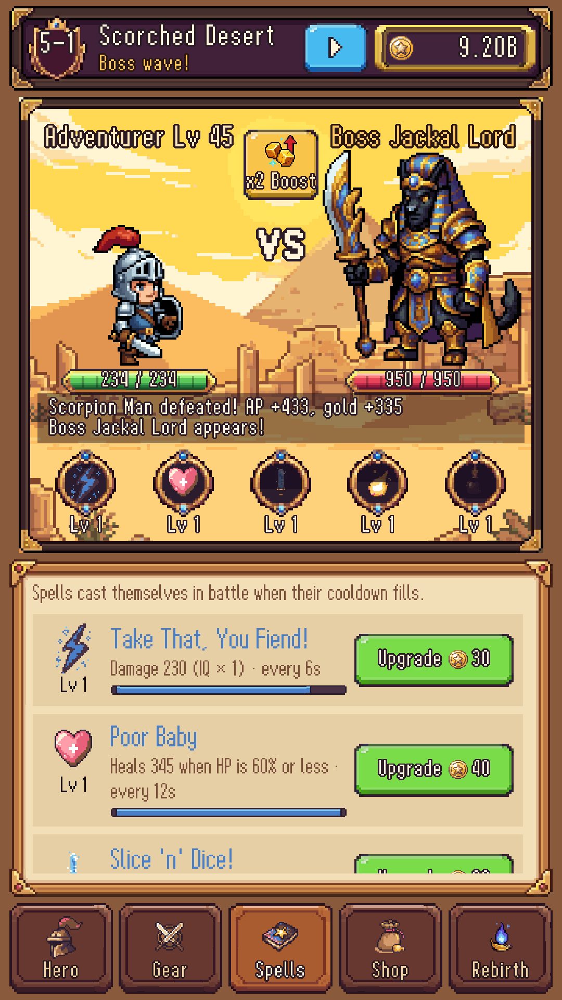
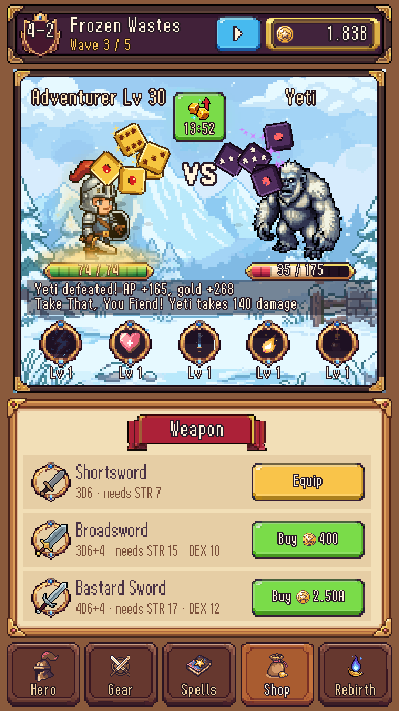
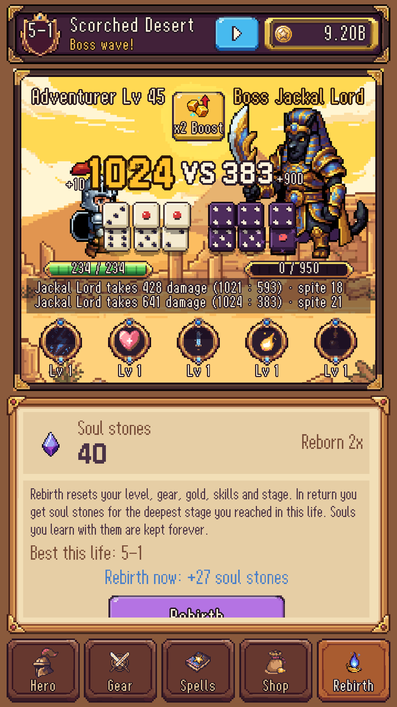